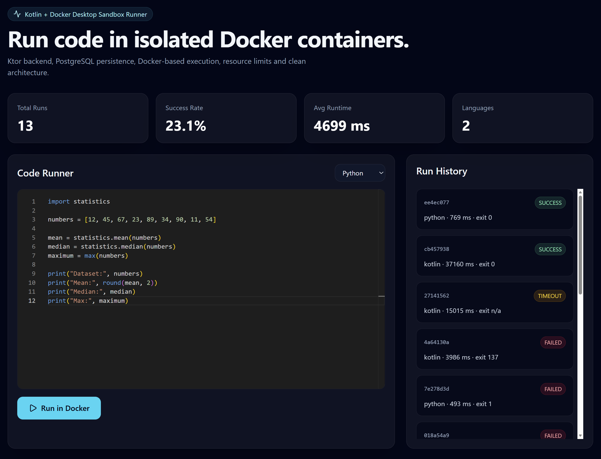
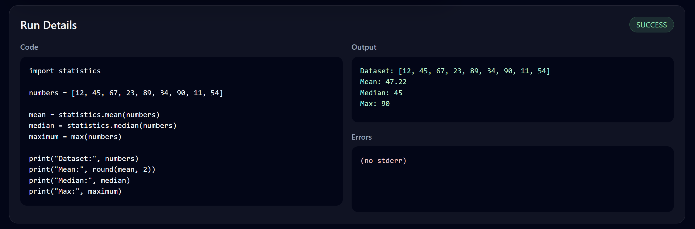
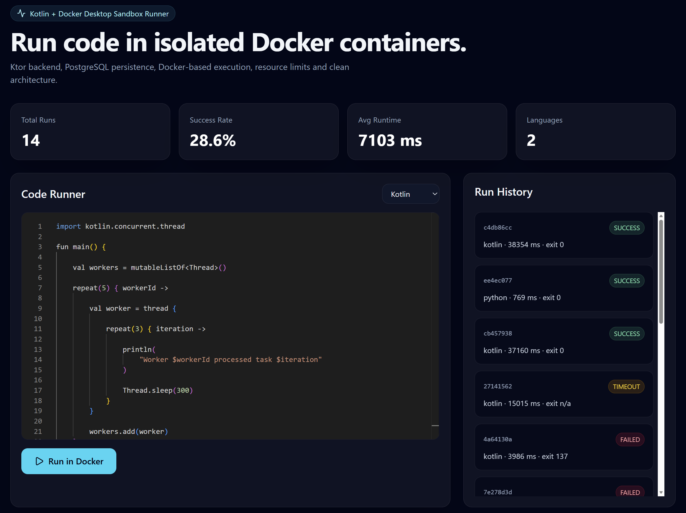
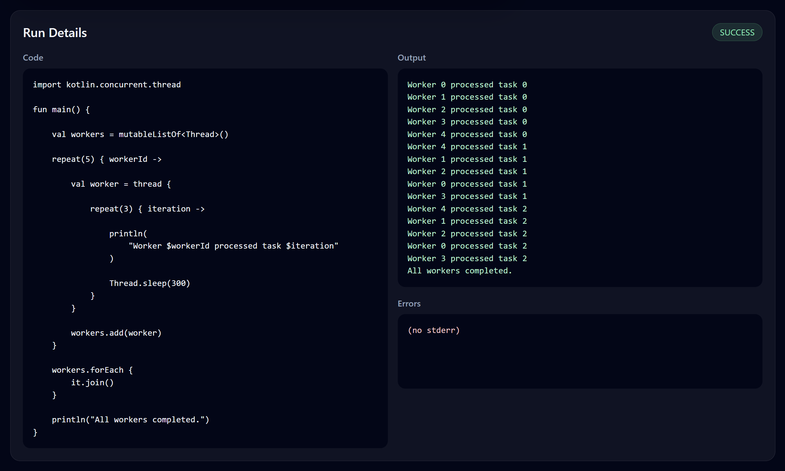
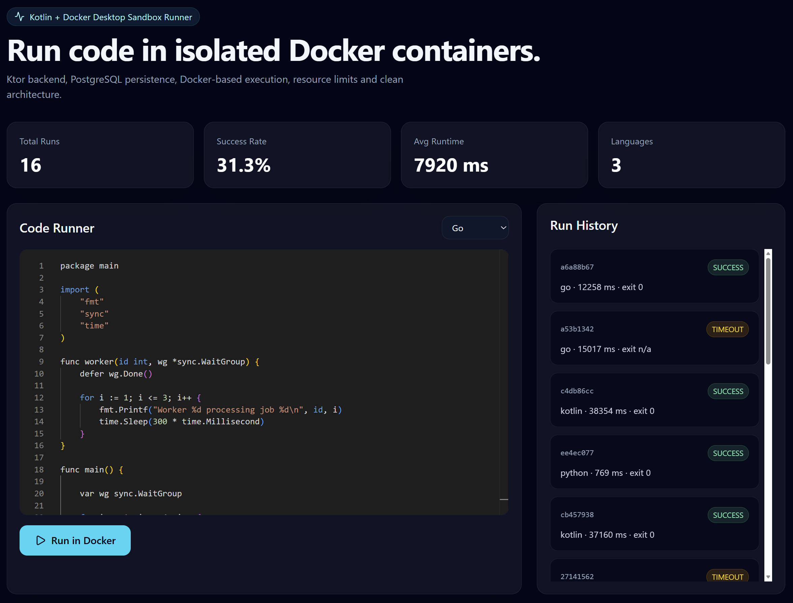
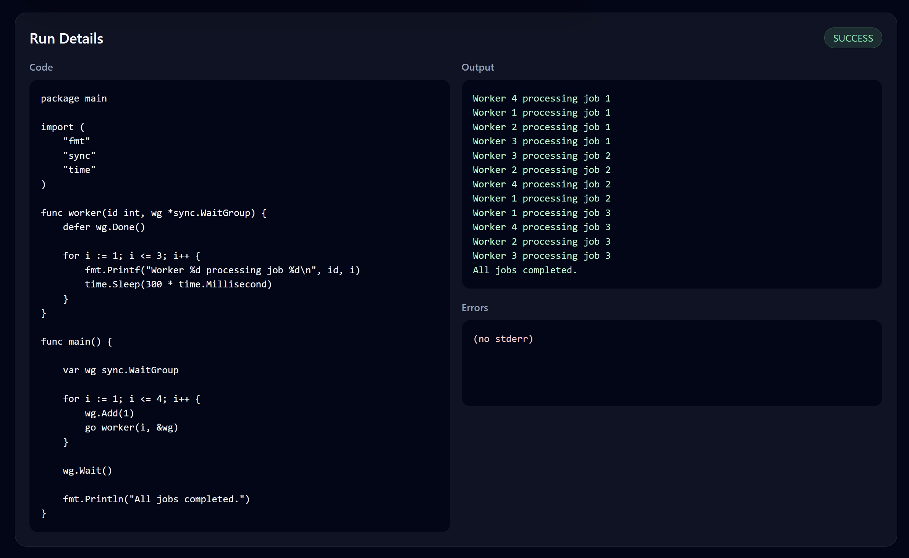
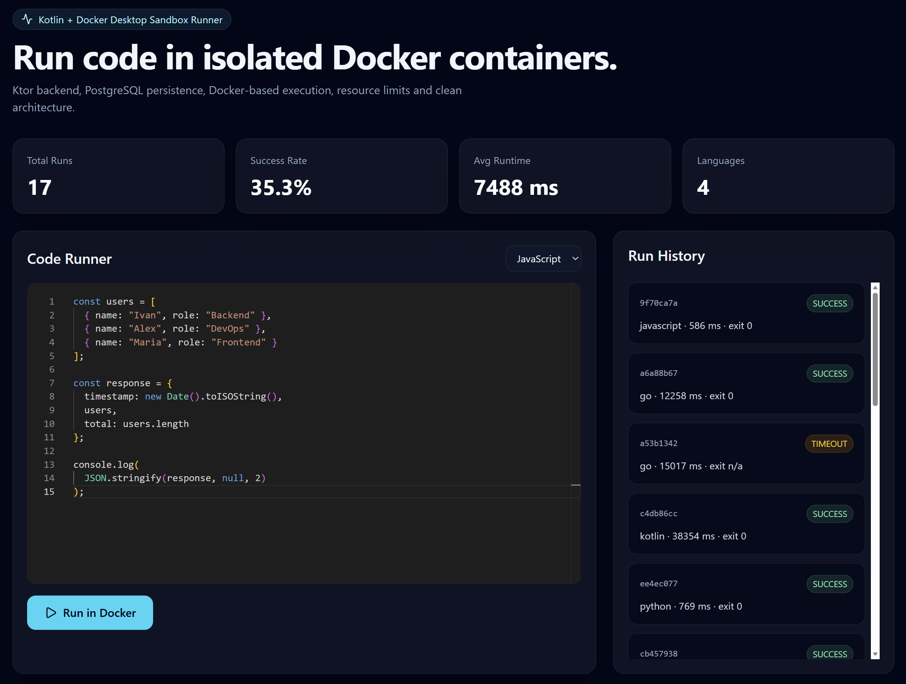
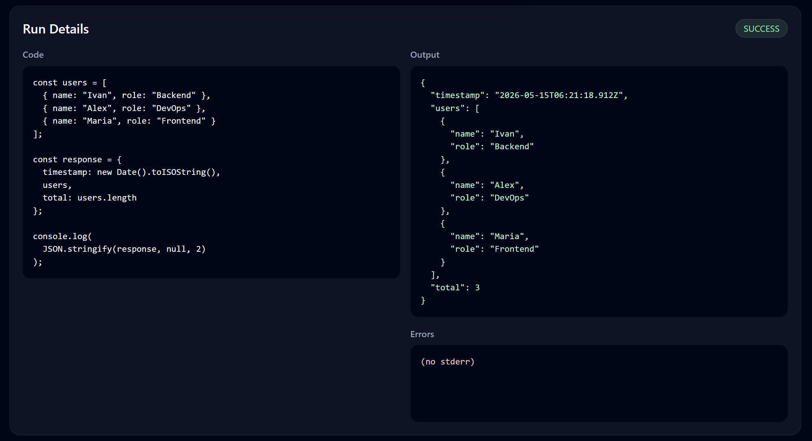

Überblick
Sandbox Runner ist eine Full-Stack-Plattform zur sicheren Ausführung von Code innerhalb isolierter Docker-Container. Unterstützt werden Python, JavaScript, Kotlin, Java und Go.
Der Fokus lag auf Infrastructure Engineering, Container-Orchestrierung, Runtime Isolation und einer sauberen Backend-Architektur mit Kotlin und Ktor.
Problemstellung
Code-Execution-Systeme benötigen starke Isolation, Runtime-Kontrolle und stabile Ressourcenbegrenzungen, um unsicheren oder fehlerhaften Code sicher ausführen zu können.
Ziel war es, eine moderne Sandbox-Architektur mit containerisierter Infrastruktur und persistenter Speicherung aufzubauen.
Architekturansatz
Docker Runtime Isolation
Jede Ausführung läuft innerhalb eines isolierten Docker-Containers mit deaktiviertem Netzwerk, CPU-/Memory-Limits und PID-Restriktionen.
Kotlin + Ktor Backend
Das Backend basiert auf Kotlin und Ktor mit klarer Trennung zwischen API, Domain, Infrastructure und Persistence Layer.
Persistente Speicherung
Alle Executions inklusive stdout, stderr, Runtime-Daten und Statusinformationen werden in PostgreSQL gespeichert.
Modernes Frontend
Das React-Frontend integriert Monaco Editor, Runtime Statistics, Run History und detaillierte Execution Views.
Technische Features
Besonders wichtig war die Kombination aus sicherer Container-Isolation, sauberer Backend-Architektur und moderner Full-Stack-Entwicklung.
Dashboard & Execution UI








Herausforderungen
Die größte Herausforderung bestand darin, containerisierte Code-Ausführung zuverlässig, sicher und gleichzeitig performant umzusetzen.
Besonders komplex waren Runtime Isolation, Docker-Orchestrierung, Resource Limits und sprachspezifische Execution Flows.
Learnings
Das Projekt hat besonders gezeigt, wie wichtig saubere Infrastruktur-Grenzen, kontrollierte Runtime-Umgebungen und robuste Architektur bei ausführbaren Systemen sind.